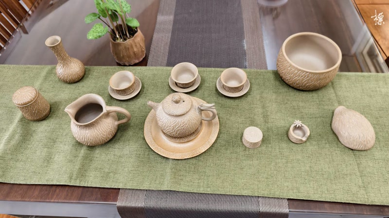

這堂課，教你捏出一整組茶席茶具
這套由台灣緞泥手捏成型的茶席用茶具，從一團土開始，由淺入深、12 堂完整教學，陪你把每一件茶器都捏進生活。
你是不是也有這些困擾？
- ❌想學陶藝，卻不知道從何開始？
- ❌單堂體驗意猶未盡，想要完整系統學習？
- ❌喜歡茶席氛圍，希望茶器出自自己手中？
這堂課帶你完成什麼？
不是零散的捏塑，而是一步一階、由淺入深的完整旅程。
課程結束時，你將擁有自己動手完成的一組茶席茶具。
- ✔認識台灣緞泥：從土況、觸感到捏塑手感，親手掌握
- ✔手捏成型基本功：由淺入深，從基礎器形到整組茶具
- ✔完成你的茶席全套：茶壺、茶臺、茶杯……親手打造茶席風景

🏺 教學成果
一整組茶席茶具，等你親手完成
從一團台灣緞泥開始，透過 12 堂循序漸進的課程，逐步捏出茶壺、茶臺、茶杯等完整茶席器物。課程結束，把屬於自己的茶具帶回家。
由淺入深・完整教學
🎯 課程特色
12 堂・每週一次・完整陪伴
從沒碰過陶土也能安心入門。
30 年職人 step by step，陪你慢慢塑造、細細調整，做出你想要的茶器。
誰適合這堂課？
✦ 完全沒碰過陶土，想從零開始的初學者
✦ 喜歡品茶，想親手做茶器的愛好者
✦ 想學習手捏成型基本功的正在學習者
✦ 想在每週留一段時間給自己的靜心時刻
師資陣容
由田清標老師與江秝笙老師（高級茶藝師）共同授課。30 餘年手捏茶壺與茶藝教學經歷，曾受電視台專訪、中國時報報導，並於全台文化中心、美術館聯展超過 20 場次。
🇹🇼 材質認識
認識台灣緞泥的溫度與手感
緞泥手感溫潤細致，燒成後適於茶席使用。課堂從認識土況開始，由老師手把手帶你掌握捏塑的力度與節奏，一步步做出理想的茶器。